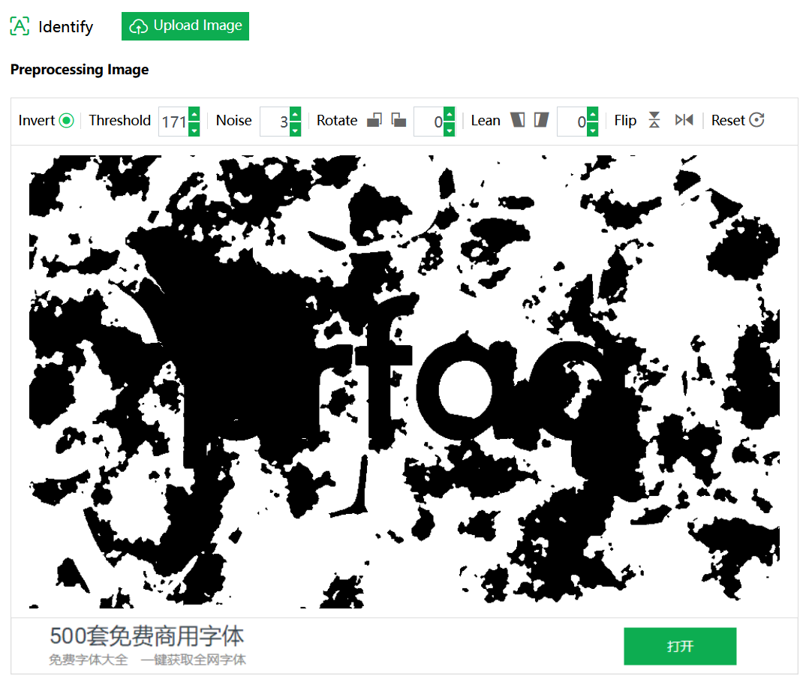
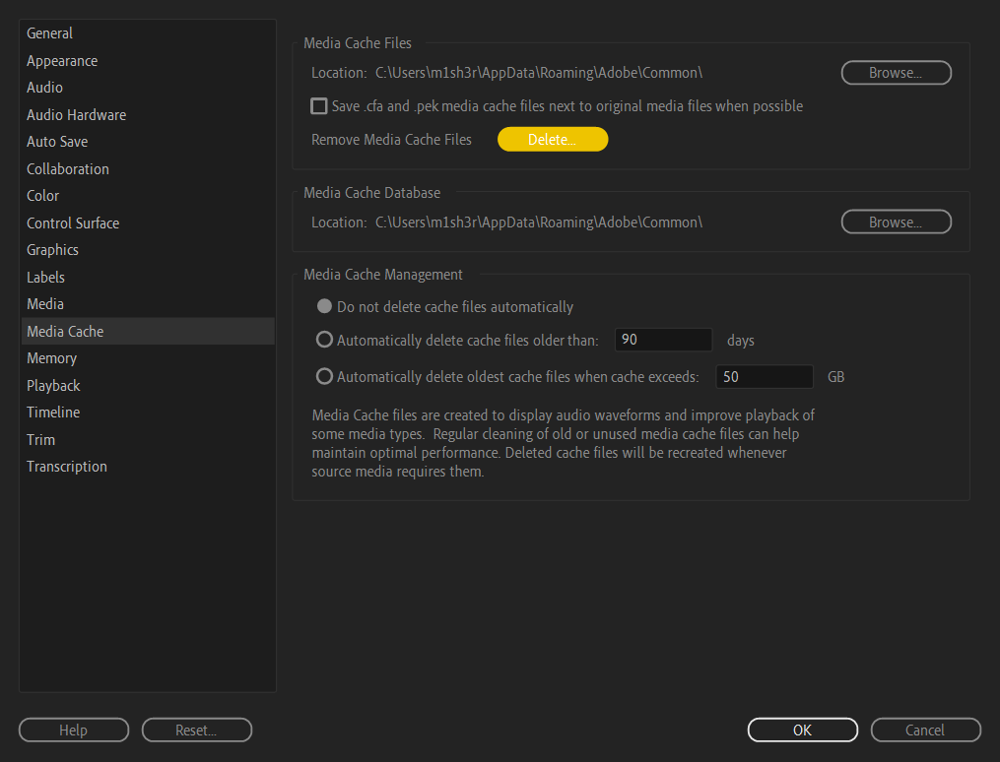
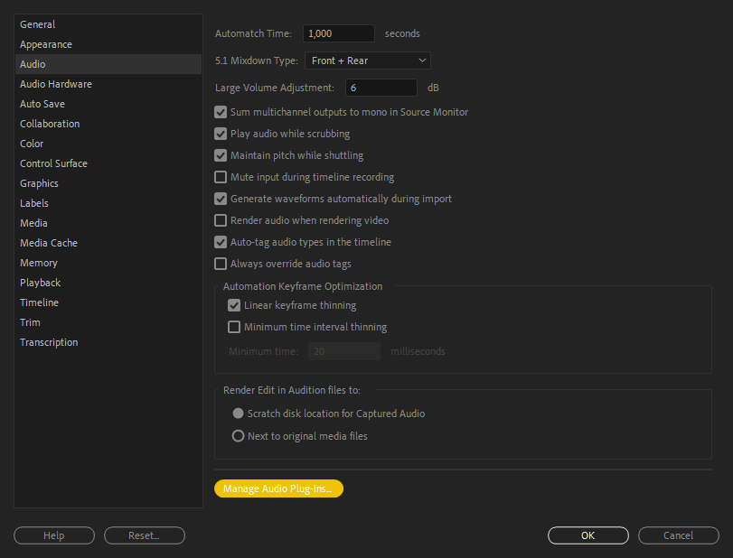

Данный раздел находится в активной разработке, поэтому некоторые пункты могут быть
пропущены или недописаны до окончательных изменений.
Полезные материалы
Где скачать шаблоны, программы для творчества, а также плагины к ним?
На
главной странице
в разделе ”Ресурсы" и в закрепленном сообщении в
AEChat
вы всегда можете найти наши каналы с полезным контентом. Например, в
PremTemp
можно найти звуки, переходы и шаблоны с помощью хештегов:
#эффекты #переходы
#плашки #плагин. А в
складе стройматериалов
вы можете найти скачать программы для творчества или различные плагины для
Windows, например:
#premierepro #magicbullet
#borisfx или #twixtor.
Программы для творчества, но для macOS, можно найти в
Яблоневом саду.
Не нашёл нужный шаблон, но у меня есть на него ссылка. Как мне его получить?
Файлы из Videohive, Shutter Stock ботом не принимаются по причине того, что
файлы из этих сервисов не распространяются по подписочной модели.
Где взять бесплатные стоковые видео для видеороликов?
Существует множество бесплатных видео-стоков онлайн, среди которых многие
предоставляют материалы с лицензией
Creative Commons Zero (CC0), что означает возможность
использования их в своих коммерческих проектах, не указывая авторство. Перед
использованием материалов, необходимо внимательно ознакомиться с условиями
использования на каждом конкретном ресурсе. Ниже перечислены популярные
источники видео:
Некоторые ресурсы могут быть заблокированы на территории РФ или других стран,
используйте VPN для доступа на данные ресурсы.
Как найти шрифт по фото?
Вы можете использовать сервисом
LikeFont
для определения шрифта по фотографии. Этот сервис способен распознавать шрифты
как на латинице, так и на кириллице. Как начать им пользоваться? Просто зайдите
на сайт и загрузите своё изображение с помощью проводника или
Ctrl + V.
Главная страница LikeFont
Учтите, что по умолчанию на странице стоит галка на
I agree to post it in Identification Community, которая
выкладывает ваш скриншот на общее обозрение. Уберите галочку, если вы не
хотите выкладывать скриншот.
Предположим, что на вход мы дали определённый скриншот. Но вот незадача: он
неконтрастный и весь контент сливается. Что же делать?

Пример плохого исходника
Для этого нужно обработать изображения. Необязательно лезть в Photoshop и что-то
там делать, ведь на сайте уже есть инструменты для обработки изображения,
например Threshold. Мы его повышаем до максимально
возможного значения, чтобы текст стал более читабельным. Также есть инструменты
для поворота, отзеркаливания и наклона изображения.
Изображение после обработки средствами сайта
Как мы видим, Threshold помог, но не сильно, так как фрактальный шум по яркости
совпал с яркостью текста. Но не унываем, у нас есть как минимум три чистых
буквы. После обработки пролистываем страницу ниже и мы видим несколько
изображений к которым нужно вписать букву.
Если на изображении нет буквы или символа, то такие ячейки можно пропустить
Чем больше вы впишете букв, тем лучше будет результат распознавания шрифта!
После того как вы вписали буквы, нажмите на
Identify Now и сервис начнёт распознавать шрифт, а затем
выдаст результат.
Результат распознавания шрифта
В моём примере был использован шрифт Berlin Sans FB и
с его нахождением сервис справился прекрасно.
Хочу влиться в Premiere Pro, с чего мне начать?
Если вы только скачали программу и не знаете как в ней работать, то посмотрите
плейлист
Азбука Premiere Pro
от
Ильи Зернова. Хоть и курс записан в Premiere Pro 2019 года,
глобальных отличий от новых версий нет, кроме интерфейсов создания и рендера
проекта.
Какой правильный пайплайн для использования чужих исходников в проекте?
Прежде чем начать работать в Premiere Pro, расположите
ваши исходники в отдельный диск или папку, а не на рабочем столе или в системных
файлах. Структурирование - основа дальнейшей работы.
Затем узнайте о ваших исходниках: в каком кодеке и цветовом пространстве был
записан и сколько FPS у видео. Для этого на вашем ПК должна быть установлена
программа
MediaInfo. После его установки в контекстном меню проводника появится пункт для открытия
файла в этой программе. Желательно для лучшего отображения информации
использовать вид Tree. Оттуда нам нужно узнать четыре
главных параметра: разрешение, переменный или постоянный FPS, кодек и цветовое
пространство.
Пример исходника, открытого через MediaInfo
Если у вас видео с постоянным FPS, цветовое пространство является
Rec.709, а исходники были записаны на адекватную
камеру, то радуемся жизни и спокойно импортируем в композицию и работаем с ними.
Если у вас видео с переменным (Variable) FPS, цветовое пространство является
Rec.2020, а исходники были записаны на iPhone, то это
полный п%@#!ц. Такие исходники необходимо привести в порядок и для этого нам
поможет сторонняя программа
Shutter Encoder.
После установки программы, нужно его запустить и закинуть ваши исходники, можно
даже целую папку.
Окно Shutter Encoder с настройками для конвертации цветового профиля
При первом запуске Shutter Encoder вам может
показаться, что интерфейс слишком сложен, но это не совсем так. Как правило,
пользователю нужно выполнить семь действий:
1. Выбрать кодек, который нам нужен. Чаще всего используют
Prores 422, DNxHR или
H.264.
2. Выбрать режим кодирования - с помощью фиксированного битрейта или
квантирования (CQ). Для этого достаточно нажать два раза на кнопку
VBR в правой части программы.
3. Установить значение CQ, если вы всё-таки выбрали квантирование в качестве
режима кодирования. Как правило, значение 20 или 23 будет достаточно, чтобы
сохранить качество, при этом получить адекватный вес. Чем ниже значение CQ,
тем лучше качество видео, но больше вес.
4. Установить битрейт для аудио, достаточно установить значение
320 Кбит/с.
5. Изменить цветовое пространство. Для этого нужно перейти во вкладку
Colorimetry или
Преобразовать цветовое пространство и установить
галочку на Convert Colorspace или
Конвертировать. Затем установите первым значением ваш
цветовой профиль, который указан в MediaInfo (для
iPhone это обычно Rec.2020). Вторым значением
установите Rec.709.
6. Если у вас видеокарта от Nvidia, то установите галочку на Hardware
Acceleration и укажите там Nvidia NVENC.
7. Нажать кнопку Start Function.
Если вы не указывали папку для выходных файлов, то файлы сохранятся в папку, где
уже были исходники. После сохранения исходников вы можете их импортировать в
Premiere Pro и начать работу.
Импортировал видео, записанное на iPhone или на камеру с HLG, а оно слишком
пересвеченное
Для решения этой проблемы установите Premiere Pro 23.2
и выше, затем в настройках Sequence активируйте опцию
Auto Tone Map Media и работайте дальше.
Настройка Auto Tone Map в Premiere Pro
Или же перекодируйте ваши исходные файлы в другой цветовой профиль, об этом мы
уже писали в предыдущем пункте.
Как импортировать исходники, которые не поддерживает Premiere Pro?
Изначально Premiere Pro не поддерживает большое
количество кодеков, такие как VP9, VP8, Flac, AV1. Также не поддерживаются
форматы .webm, .flv,.mkv
и прочие.
Почему это происходит? Потому что любая программа для монтажа чего-угодно
предназначена работать только с монтажным кодеком. В последнее время для
упрощения работы Adobe добавляет поддержку различных форматов. Но поскольку
декодирование из не монтажных кодеков работает не так, как хотелось бы, то могут
возникать различные проблемы, например появляются артефакты при использовании
H.264 из различных частей интернета.
Если у вас небольшой проект и нет желания заниматься перекодированием
исходников, то вы можете попробовать использовать плагин
Autokroma Influx. Он облегчает импорт некоторых файлов, которые не поддерживаются в
After Effects,
Media Encoder или
Premiere Pro.
Помните, что используя плагин, вы рискуете наткнуться на технические проблемы:
искажённые цвета, долгий рендер или различные ошибки.
Если это не решит проблему, вы можете перекодировать исходные файлы в монтажный
кодек с помощью
Shutter Encoder
в Apple Prores 422 и прочитать
правильный пайплайн
перед началом работы. Если вам не нравится, что после вывода видео в
Apple Prores 422 занимает много места в памяти, то вы
можете перекодировать в H.264, даже если у вас
изначально был этот кодек. Методом тыка и проб было выявлено, что адекватно
перекодированный исходник в H.264 через
Shutter Encoder работает стабильно, как и при
использовании монтажных кодеков. Правда из-за того, что на декодирование будут
использоваться больше ресурсов, то работа с такими исходниками будет медленной.
Как открывать и импортировать файлы .heic, .heif и .hevc?
На Windows 10 и 11 нельзя открыть файлы .heic,
.heif и .hevc без
установленного кодека. Казалось бы, достаточно их установить с Microsoft Store.
К сожалению, один из кодеков платный, поэтому мы будем устанавливать эти пакеты
вручную.
Также открыть файлы в .heic,
.heif и .hevc в
Premiere Pro также не получится без конвертации.
Ошибка импорта HEIC в Premiere Pro
Чтобы открыть эти файлы у себя на компьютере, а затем с ними работать
(перекодировать или отредактировать), нужно установить кодеки. Кодек для
HEIF/HEIC и HEVC можно
скачать через
онлайн-генератор ссылок для Microsoft Store. Перейдите по этой ссылке и введите в строку поиска текст ниже и нажмите на
галочку для поиска.
https://apps.microsoft.com/9n4wgh0z6vhqДля установки кодека HEVChttps://apps.microsoft.com/9pmmsr1cgpwgДля установки кодека HEIF
После того как вставили одну из ссылок - скачайте файл формата
.appxbundle. Если ваш браузер жалуется на "вирусы" -
проигнорируйте это и продолжите скачивание.
Чтобы установить .appxbundle пакеты, достаточно их
открыть двойным кликом.
Если вам предлагают открыть файл с помощью
Обработчика команд Windows или
Установщика приложений, то выбирайте что вам душе
угодно. Я же предпочту Обработчика.
Окно "Каким образом вы хотите открыть файл?"
Если после установки с помощью Обработчика команд вы
видите это, то кодеки установились корректно.
Path :
Online : True
RestartNeeded : False
После установки кодеков вы теперь сможете открывать файлы
.heif, .heic и
.hevc на вашем компьютере, чтобы в дальнейшем их
просматривать вне Premiere Pro. Видеофайлы всегда можно
переконвертировать через
Shutter Encoder
в монтажный кодек, а фото - через
FastStone Image Viewer
в удобный формат, например .png или
.tiff.
Почему у меня, б%@#ь, лагает Premiere Pro?
Никто не может назвать конкретную причину этого явления, ведь всё упирается в
то, что вы делаете в вашем проекте.
Первое, что можно посоветовать перед тем как начать работу - создать прокси для
ваших исходников или перекодировать их в монтажный кодек, чтобы не нагружать
лишний раз ваш ПК.
Если вы видите на вашем таймлайне жёлтые или красные полосы, то при проигрывании
предпросмотра вы заметите лаги. Это связано с тем, что на клипе по-любому
используется ресурсоёмкий эффект или переход и его надо закэшировать. Для этого
перейдите в Sequence > Render In to Out и дождитесь
конца пре-рендера. После этого ваш предпросмотр будет закэширован в памяти и вы
можете просмотреть его без лагов.
Как вернуть звуковую дорожку у видео или видеодорожку у аудио?
Видео от
Ярослава Семёнова
из канала
Nano Tuts
в Telegram
Как отключить выделение объекта при передвижении плейхеда?
Для этого уберите галочку в
Sequence > Select Follow Playhead и наслаждайтесь
жизнью.
Как разделить голос человека от музыки?
Если у вас достаточно производительный ПК, то вы можете установить программу
StemRoller, с помощью которого вы сможете разделить локальный файл на голос, басс,
инструментал и биты. Также с помощью этой программы можно обработать любой звук
из YouTube или других ресурсов.
Если вы хотите воспользоваться онлайн-сервисами, то могу посоветовать
Vocal Remover
и
Vocali.
Как изменить вид отображения времени на таймлайне?
По умолчанию Premiere Pro отображает время в формате
ЧЧ:ММ:СС:Кадр, но иногда хочется поменять это на что-то другое. Для этого
нажмите ПКМ на вашем текущем времени в таймлайне и
выберите что вам необходимо.
Установка нужного вида времени
Если вы хотите передвинуть временную метку меньше чем на кадр, чтобы подрезать
аудио, то вам нужно включить режим отображения аудио-времени. Для этого нажмите
на три полоски в окне с таймлайном и нажмите на
Show Audio Units. Убрать можно аналогичным образом.
Показ аудио-времениЕсть ли аналог FX Console для Premiere Pro?
Он позволяет применять эффекты, пресеты и переходы с помощью всплывающего меню.
По умолчанию плагин работает с комбинацией клавиш
Alt+Space. Если вам такая комбинация не нравится, то в
настройках плагина вы всегда сможете поменять на удобное вам значение.
Куда пропала настройка Timeline в Preferences?
Данный пункт пропадает на нелицензированных версиях
Premiere Pro. Его можно вернуть простым входом в
аккаунт Adobe. Не бойтесь, лицензия не слетит, если у вас изначально были
прописаны hosts для блокировки поиска лицензии (при установке репака от KpoJluk
- этот пункт делается автоматически).
В последних версиях Premiere Pro баг с исчезновением
этого пункта по идее исправили, но не исключено повторное появление этой
проблемы в дальнейшем.
Зачем люди советуют поменять язык на английский в Premiere Pro и как это
сделать?
Аналогично как с After Effects вы можете наткнуться на
различные баги и приколы при использовании сторонних шаблонов или пресетов.
Создатели подобного рода контента не рассчитывают на то, что вы будете
использовать другую локализацию программы, отличную от английской.
Для смены языка откройте консоль с помощью
Ctrl + F12 и переключитесь в
Debug Database View.
Окно консоли в Premiere Pro
Затем нужно найти строчку ApplicationLanguage и указать
en_US вместо того, что у вас указано. После этого
перезагрузите программу и наслаждайтесь более стабильной работой программы.
Как мне передать проект с исходниками другому человеку?
Для этого перейдите в File > Project Manager,
выберите путь для сохранения в
Destination Path > Browse и нажмите
OK.
Окно Project Manager
После сохранения, перейдите в папку куда вы сохранили проект и создайте архив с
помощью
WinRAR
для Windows или
keka
для macOS. После создания архива вы сможете отправить проект с исходниками
другому человеку любым удобным для вас способом.
Почему у меня не работает функция транскрибации?
На нелегальных версиях Premiere Pro вы не сможете
скачать пакеты для распознавания речи в текст по причине того, что они не могут
достучаться до серверов Adobe. Вам нужно установить языки для транскрибации
локально.
Для этого перейдите в
склад стройматериалов
и найдите посты под хештегом #speechtotext для вашей
версии Premiere Pro.
Внимательно смотрите описание записей: версии языковых пакетов, не
предназначенные для вашей версии Premiere Pro, не будут
работать. То есть вы не можете установить языковой пакет предназначенный для
Premiere Pro версии 24.3 на
Premiere Pro версии 24.4 и наоборот.
Частые ошибки
This effect requires GPU acceleration
Попробуйте включить в настройках проекта ускорение с помощью GPU. Для этого
перейдите в
File > Project Settings > General и переключите в
Renderer пункт на
Mercury Playback Engine GPU Acceleration (CUDA/OpenCL).
Настройки проекта в Premiere ProMedia offline или Медиаданные в автономном режиме
Данная псевдо-ошибка возникает в случаях, когда вы удалили с диска исходники или
перенесли их. Для этого просто переподключите их в окне Project, выбрав исходник
и нажав по нему правой кнопкой мыши. Затем выберите пункт
Link Media или Replace Footage.
Контекстное меню у исходника в окне Project
Если вы выбрали пункт Link Media, то в новом окне
нажмите на кнопку Locate и укажите новое местоположение
ваших исходников.
Окно Link Media
Если вы выбрали пункт Replace Footage, то откроется
проводник для выбора нового файла. Укажите его и файл подхватится, затем вы
сможете продолжить работу.
Появились горизонтальный или вертикальные чёрные полосы на предпросмотре
Это баг некоторых версий драйверов Nvidia, попробуйте установить драйвера из
линейки Studio.
Пропала визуализация аудио на таймлайне
Попробуйте очистить .peak-файлы в настройках Premiere
Pro. Для этого перейдите в
Edit > Preferences > Media Cache и нажмите
Delete у
Remove Media Cache Files.

Очистка кэша медиа-файлов
Если это не помогло, то попробуйте отправить нужную аудио дорожку в
Audition с помощью
ПКМ по дорожке > Edit in Audition, сохранить его там
и вернуться в Premiere Pro. Программа сделает замену
аудиодорожки на другую и соответственно пересчитает предпросмотр.
Пропал звук при предпросмотре
Такое бывает, если вы недавно меняли аудио-выход, например подключали к
компьютеру Bluetooth-наушники, а потом выключили. Проверьте аудио-выход в
Edit > Preferences > Audio Hardware и укажите при
необходимости нужный.
Настройка аудио-выхода
Вылетает Premiere Pro и Media Encoder после установки плагинов BorisFX Sapphire
Для этого установите режим совместимости с Windows 8 в параметрах
ярлыка Premiere Pro и
Media Encoder.
Установка режима совместимости на примере Media Encoder
После проделанных действий, попробуйте запустить программу ещё раз. Если это не
помогло, удалите BorisFX Sapphire или переустановите
Premiere Pro и Media Encoder.
Проблемы с установкой
Что делать, если файлы разбиты на .part1, .part2 и так
далее?
Эти файлы были специально разделены для обхода ограничений Telegram по размеру
загружаемых файлов, все части нужно скачать на компьютер. Для корректной
распаковки многотомных архивов воспользуйтесь
WinRAR
для Windows или
keka
для macOS.
Если в архиве присутствует исполняемый файл .exe, то
достаточно его запустить и WinRAR автоматически
распакует все файлы.
В архив забыли положить инструкцию для установки, как что устанавливать?
В большинстве случаев процедура установки плагинов или шаблонов универсальна,
просто следуйте рекомендациям ниже:
Прежде чем использовать .aep и
.mogrt шаблоны или пакеты для
AtomX, Motion Bro и
подобных расширений, убедитесь, что они полностью распакованы и расположены в
пути не длиннее 256 символов!
Если в архиве находится файл .prproj,
.aep или .mogrt, то такие
файлы просто импортируются в ваш проект с помощью
File > Import или Ctrl+I и
никуда не устанавливаются.
Если в архиве находится файл .aex или
.prm, то такие плагины для Windows распаковываются в
общую папку плагинов
C:\Program Files\Adobe\Common\Plug-ins\7.0\MediaCore.
Почему не подключаются исходники из шаблона или проекта?
Чаще всего проблема возникает из-за того, что пользователи не распаковывают файл
шаблона в отдельную директорию, а пытаются открыть
.prproj файл напрямую из архиватора. Архиватор при
открытии .prproj или
.mogrt не распаковывает все файлы во временную
директорию %TEMP% и
Premiere Proлить где находятся исходные файлы.
Для правильной работы шаблона рекомендуется полностью распаковать его в удобное
место, не превышающее 256 символов в пути
Если вы распаковали шаблон вместе с исходниками, но файлы все равно не
подключаются автоматически, то вам нужно подключить их вручную. Просто щелкните
правой кнопкой мыши на любом потерянном файле в окне
Project, затем нажмите ПКМ по
исходнику с ошибкой и выберите Replace Footage или
Link Footage.
Открытие окна Link Media
В открывшемся окне, если вы выбрали Link Media, укажите
путь к потерянному файлу с помощью кнопки Locate. Если
все файлы проекта находятся в одной папке, остальные файлы должны подтянуться
автоматически. Если в разных папках, то вам может помочь функция
Search.
Окно Link Media
После этого ваши исходники подключатся правильно и вы сможете продолжить свою
работу.
Установил VST-плагины, а они не отображаются в Premiere Pro
VST-плагины не ищутся программой в автоматическом режиме, их нужно
инициализировать вручную. Для этого перейдите в
Edit > Preferences > Audio и нажмите на
Manage Audio Plug-ins.

Окно Preferences с открытым разделом Audio
Затем в открывшемся окне нажмите на Scan For Plug-ins.
Окно Audio Plug-in Manager
После успешного сканирования попробуйте применить ваши новые плагины на
аудиодорожку или Track Mixer.
System Compatibility Report при запуске Premiere Pro
Паниковать не надо, с таким окном вы можете спокойно продолжить работу, просто
нажав на Continue with known issues. В таком случае
запуск программы продолжится, но возможно будут отключены некоторые функции
приложения.
Ошибка совместимости из-за устаревших драйверов на встроенную видеокарту на
процессор Intel Core i7-7700
Если вам надоело видеть это окно каждый раз при запуске программы, то вы его
можете легко отключить. Для этого перейдите в
Edit > Preferences > General и отключите
Show system compatibility issues at startup.
В противном случае - обновите драйвера или устраните проблемы, о которых вам
пишут в этом окне.
Ошибка при запуске приложения 0xc0000142
Ваш устаревший компьютер уже не поддерживает современные версии программы. Для
свежих версий требуется процессор от Intel минимум 8-го поколения (по факту
можно запустить от 4-го поколения) или AMD Ryzen минимум 1000 серии, а также
поддержка инструкций AVX2. Подробнее о системных требованиях вы можете прочитать
на
сайте Adobe.
Для решения этой проблемы, установите
Premiere Pro 2023 или старее из
склада стройматериалов.
В некоторых случаях у пользователей внезапно
AVX2 отключается системой, даже если процессор
поддерживает эти инструкции. Чтобы их включить, откройте терминал и введите
команду ниже.
bcdedit /set xsavedisable 0
Затем перезагрузите компьютер и попробуйте открыть
Premiere Pro. Чтобы отключить
AVX2, укажите вместо 0 число
1 и также перезагрузите ПК.
Не удаётся найти helper.exe при установке репаков от Kpojluk
Эта ошибка возникает когда Windows Defender или
сторонний антивирус блокирует файл helper.exe, который является
распаковщиком дистрибутива. Простейший способ решения - временное или полное
отключение антивируса во время установки. Если возникают проблемы, добавьте
%TEMP% вашей системы в белый список антивируса на
время.
Если способ из видео не помог, то рекомендую отключить
Windows Defender с помощью
Winaero Tweaker. После установки или распаковки портативной версии откройте программу,
подтвердите что вы осознаёте что делаете и найдите пункт
Disable Windows Defender. Установите галочку и
перезагрузите ПК. В некоторых случаях нужно отключить в Windows Defender пункт
Защита от подделки, которая не даёт отключить встроенный
антивирус полностью.
"Некоторые установочные файлы были повреждены" при попытке открыть репак от
Kpojluk
Данная ошибка появляется, если вы не докачали или прервали скачивание файла. В
таком случае просто повторите скачивание репака.
Если вы полностью скачали файл и уверены в том, что в
складе стройматериалов
битый файл - сообщите об этом в комментариях под нужным постом
rsload.net заблокирован в hosts при открытии репака от Kpojluk
Такое бывает, если у вас нет файла hosts в системе или
сайт rsload.net внесён в этот список. Про исправление файла hosts расписано на
сайте
remontka.pro.
Правда ли, что в репаках от Kpojluk водятся вирусы?
В репаках от KpoJluk антивирусы часто ругаются на файл helper.exe (может
помечаться как HackTool или иначе), который распаковывает файлы для обхода
проверки лицензии. Антивирусы также ругаются на наличие галочки с рекламой перед
установкой (помечается как AdWare, при снятии галочки рекламы перед установкой,
ничего лишнего в систему не устанавливается). Virustotal также может срабатывать
ложно из-за малоизвестных антивирусов.
Ни в одной моей сборке никогда не было и не будет какого-либо вредоносного или
шпионского программного обеспечения. Реакция антивирусов может быть просто
ложной, а также обусловленной технической схожестью между методом активации
программы и активностью вредоносного ПО. Поэтому, либо вы доверяете мне, как
сотни тысяч других пользователей, и отключаете антивирус на время установки,
либо прекращаете использование этого ресурса.
Если вы испугались командной строки при установке программ от
Adobe, то спешу вас успокоить. В командной строке
выполняются команды для добавления адресов в hosts, чтобы программы от
Adobe не лезли в сеть и не показывали окна о
"недействительной лицензии".
Случайно забыл убрать галочку с "Реклама" перед установкой, что делать?
Вы согласились с установкой домашней страницы и поиска от
me.fo/hi.ru или с установкой
Яндекс.Браузера на первой странице установщика. Удалить
все "нововведения" можно через
Панель управления > Удаление программы. В следующий
раз не забывайте убирать галочку. Также вы можете воспользоваться программой
Unchecky, которая убирает за вас галочки. Данная программа может не работать в репаках
для Adobe.
Почему Media Encoder не подключается к Premiere Pro?
Если у вас стоит разный "год" программ, например Premiere Pro 2024 и Media Encoder 2022, то они и не должны видеть друг друга. Программы должны быть одного года.
Также программы не увидят друг друга если они установлены на разных путях. Переустановите все программы в стандартное расположение и не меняйте его при установке.
Про рендер
Как правильно выводить видео из Premiere Pro?
В рендере нюансов и технических тонкостей много. Предположим, что ваш заказчик
хочет качественное видео с минимальным весом, в цветовом пространстве
Rec.709 и кодеке H.264 или
H.265
Вы можете вывести видео из Premiere Pro с помощью нативного кодека H.264.
Начнём с самого простого: при нажатии на Ctrl + M
программа по умолчанию предложит вам вывести в
H.264, с чем мы и соглашаемся, нажав на кнопку
экспорта.
Если результат от стандартного H.264 не понравился, то
на помощь приходят AfterCodecs или
Voukoder.
Если вы выбрали путь рендера с помощью Voukoder, убедитесь, что на компьютере
установлен
коннектор для Premiere Pro. Без него в программе не появится пункт Voukoder!
Если вы хотите вывести видео с помощью Voukoder, то
выберите соответствующий пункт при выборе формата. Затем нажмите на...
Ещё существует интересный способ для вывода с помощью Pre-render для
последующего сокращения времени рендера при незначительных правках от заказчика.
Для начала откройте настройки секвенции, перейдя в
Sequence > Sequence Settings, затем переместитесь в
раздел Video Previews и укажите кодек для пре-рендера. В
нашем случае мы выберем Apple Prores 422, но вы можете
указать любой другой.
Настройка кодека для Video Preview
Выбор кодека в Video Previews должен совпадать с кодеком для финального рендера,
чтобы фишка с быстрым рендером сработала. То есть если вы выбрали в Video
Previews кодек Apple Prores 4444, то и в
Ctrl + M тоже должен стоять кодек
Apple Prores 4444
После того как мы выбрали кодек для пре-рендера, нужно указать точку In в начале
вашего таймлайна и точку Out в конце с помощью кнопок
I и
O
соответственно или очистите выделение с помощью
Ctrl + Shift + X. Затем перейдите в
Seuqence и нажмите на
Render In to Out.
Кнопка для начала пре-рендера в Premiere Pro
Учтите, что пре-рендер может занимать у вас большое
количество памяти на жёстком диске. Если у вас большой проект - позаботьтесь о
том, чтобы у вас было достаточно места на жёстком диске.
После окончания пре-рендера над вашим таймлайном должна появиться полностью
зелёная полоска. Это означает, что вся последовательность закэширована.
Чтобы сделать финальный рендер, нужно выполнить ряд действий:
Укажите для вывода такой же кодек, который был установлен в
Sequence Settings. В нашем случае это был
Apple Prores 422.
Смена кодека для рендера
Изменить глубину на 16 бит и установить галочки у пунктов
Use Maximum Render Quality и
Render at maximum depth в вкладке
Video.
Установка битности цвета для максимального качества
Установить галочку у пункта Use Previews в
General.
Установка галочки для использования файлов пре-рендера
После этого нажимаем на кнопку Export. С
пре-рендером на больших проектах это может занять
всего лишь пару минут.
Результат всех наших действий мы должны закинуть в
Shutter Encoder, но на этот раз там не нужно менять
цветовое пространство. Он нам нужен, чтобы подогнать ваше видео под требования
заказчика или площадки, но об этом - уже другая история.
Какой битрейт лучше ставить для вывода в социальные сети?
Каждая социальная сеть пережимает исходное видео под свои параметры, чтобы
уместить их на своих серверах. Порой установка слишком низкого битрейта или
других неверных параметров только усугубляет положение и портит ваше видео.
Качество вашего видео будет зависеть от происходящего на экране. Если вы
монтируете говорящую голову или видео с минимальными
движениями, то будет достаточно установить битрейт 5-10 Мбит/с для
того, чтобы вы смогли сохранить все детали на видео. Если вы монтируете
динамичную сцену, или сцену с кучей маленьких частиц, то и
150 Мбит/с может не хватить, чтобы сохранить все детали. Почему так
происходит, объясняется в видео ниже:
Самое главное правило, которое применяется для всех видео: сохраняйте частоту
кадров исходного видео, она не должна отличаться после кодирования. Если вы
монтируете видео с разным FPS, то выводите видео с наименьшим из них или
интерпретируйте исходники в одну частоту кадров. В противном случае вы
наткнетесь на пропуски кадров или другие неприятные последствия.
Прежде чем загрузить куда-нибудь контент с чересстрочной разверткой, сделайте ее
прогрессивной. Например, контент в формате
1080i60 следует перевести в
1080p30, то есть 60 чересстрочных полукадров в секунду
следует заменить 30 прогрессивными кадрами в секунду.
Для того чтобы опубликовать видео на
YouTube, оно должно соответствовать требованиям площадки:
Видео должно иметь переменный или постоянный битрейт, ограничения на него
нет, но лучше соблюдать таблицу битрейтов.
Контейнер должен быть .mp4
Видеокодек - H.264, аудиокодек -
AAC с частотой дискретизации 48 кГц или 96 кГц.
Видео должно содержать стерео или 5.1 каналы для аудио.
Разрешение
Битрейт (24, 25, 30 FPS)
Битрейт (48, 50, 60 FPS)
8K
80–160 Мбит/с
120–240 Мбит/с
2160p (4К)
35–45 Мбит/с
53–68 Мбит/с
1440p (2К)
16 Мбит/c
24 Мбит/c
1080p
8 Мбит/c
12 Мбит/c
720p
5 Мбит/c
7,5 Мбит/c
480p
2,5 Мбит/c
4 Мбит/c
360p
1 Мбит/c
1,5 Мбит/c
Таблица рекомендуемого битрейта для вывода в YouTube при использовании SDR
Разрешение
Битрейт (24, 25, 30 FPS)
Битрейт (48, 50, 60 FPS)
8K
100–200 Мбит/с
150–300 Мбит/с
2160p (4К)
44–56 Мбит/с
66–85 Мбит/с
1440p (2К)
20 Мбит/с
30 Мбит/с
1080p
10 Мбит/c
15 Мбит/с
720p
6,5 Мбит/с
9,5 Мбит/с
480p
Не поддерживается
Не поддерживается
360p
Не поддерживается
Не поддерживается
Таблица рекомендуемого битрейта для вывода в YouTube при использовании HDR
Для TikTok требования следующие:
Площадка даёт возможность загрузить видео до 250 Мб, если вы выкладываете с
устройства на iOS и до 75 Мб, если вы выкладываете с устройства на Android.
Контейнер должен быть .mp4 или
.mov.
В качестве видеокодека должно использоваться
H.264.
Разрешение
Битрейт (24, 25, 30 FPS)
1080p
5-8 Мбит/с
720p
2,5-5 Мбит/с
Таблица рекомендуемого битрейта для вывода в TikTok
Для Instagram* необходимо соблюдать следующие условия:
Соотношение сторон видео должно быть 4:5, 16:9 или
4:3, если вы собираетесь выкладывать в обычный пост.
Соотношение сторон видео должно быть 9:16, если выкладываете
видео для IGTV,
Stories или Reels.
Видео может содержать любое количество FPS, но желательно придерживаться
стандарту 24, 25 или 30 FPS, так как
при использовании видео с 60 FPS нужно больше битрейта, а Instagram* любит
пережимать видео под себя.
Разрешение
Битрейт (24, 25, 30 FPS)
1080p
5 Мбит/с
720p
2,5-4 Мбит/с
Рекомендуемый битрейт для вывода в Instagram*
*Instagram и Meta признаны экстремистскими организациями и запрещены на
территории Российской Федерации.
Если вы хотите выложить публикацию с видео в Telegram, то при загрузке с
компьютера оно обычно не сжимается и выкладывается как есть. С мобильных
устройств идёт сжатие видео, поэтому прежде чем выкладывать видео с мобильного
устройства - укажите максимально возможное качество.
Пункт выбора качества в мобильном Telegram
Если вы хотите выложить историю в Telegram, то вам нужно экспортировать видео в
разрешении 1280 x 720 и указать перед экспортом битрейт до
5 Мбит/с. Если вы попробуете выложить в разрешении больше, чем
1280 x 720, то Telegram сожмёт ваше видео до 720p.
Если вы хотите установить себе анимированную аватарку в Telegram, то вам нужно
вывести видео в разрешении до 800 x 800 и с битрейтом до
2 Мбит/с.
Что делать, если рендер зависает на определённом моменте?
Если у вас в предпросмотре всё проигрывается отлично, а на выводе сбоит рендер,
то вы можете попробовать вывести видео с
Preview-файлами. Об этом рассказано в
пункте 5.2
про рендер видео из программы.
Если вы используете Dynamik Link для совмещения композиций из
After Effects и рендер останавливается именно в этом
месте, то вам стоит попробовать воспользоваться функцией
Render and Replace. Для этого выберите ваш клип на
таймлайне, нажмите ПКМ и нажмите на
Render and Replace.
Рендер и замена композиции из After Effects в Premiere Pro
После открытия окна для выбора формата выберите нужные вам настройки и путь для
вывода. В большинстве случаев хватает выбора кодека
Apple Prores 422.
Окно Render and ReplaceПочему после рендера всё смещается влево или вправо?
Это один из старых багов программ версий 23.1, 23.2,
23.3, 23.4 и 23.5 при использовании
Media Encoder в качестве рендера. Просто обновите
After Effects,Media Encoder и
Premiere Pro до 23.6 или выше.
Почему, если я создал субтитры, их не видно после рендера?
По умолчанию в Premiere Pro выключен пункт Captions в
настройках рендера.
Рендер субтитров в Premiere Pro
Для этого, включите его и повторите рендер снова. Чтобы не забывать его включать
в следующий раз - можно создать пресет с настройками для рендера